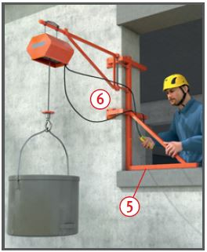
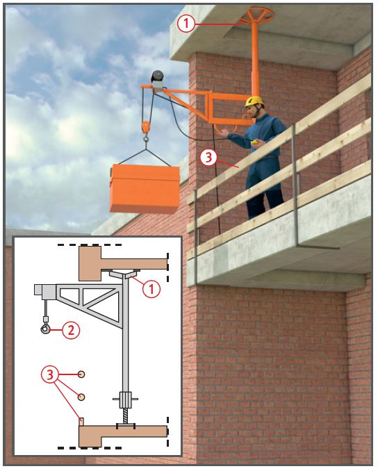
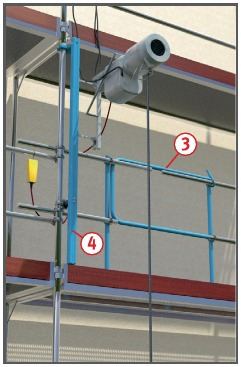
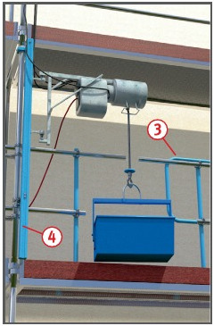
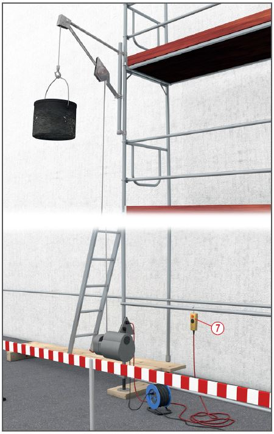

Gefährdungen
- Fehlende Sicherungsmaßnahmen bei der Montage bzw.
Demontage des Aufzuges sowie
mangelhafte Absturzsicherung
an den hochgelegenen Ladestellen können zu Absturzunfällen führen.
- Bei der Benutzung kann es zu
Verletzungen durch herabfallende
Gegenstände oder zu Quetschungen
der Finger z. B. beim
Einlegen des Hubseils kommen.
Schutzmaflnahmen
Aufstellung
- Aufbau nach Montage- und
Betriebsanleitung des Herstellers
(mufl vor Ort sein) unter
Leitung einer fachkundigen
Person.
- Geschosshohe Haltesäulen je
nach Bauart oder örtlichen Verhältnissen
formschlüssig hinter
standfesten Gebäudeteilen anordnen.
- Kopf- und Fußplatte mit
Dübeln verankern, sofern keine
ausreichend große Kopfplatte
vorhanden ist (ohne Verankerung
Mindestdurchmesser der
Kopfplatte ≥ 1/6 der Säulenhöhe)
 .
.

- Säule nicht zwischen Kragplatten einspannen.
- Dreiböcke zur Aufnahme des
Schwenkarmes nur auf tragfähigen Flächen (z. B. Betondecke)
aufstellen. Größe des
Gegengewichtes nach Angaben
des Herstellers. Hierfür dürfen
keine Materialien wie z. B. Mauersteine
oder Zements‰cke verwendet
werden, die im Zuge der Baumaßnahmen
verarbeitet werden.
- Bei Verwendung von Fensterwinkeln
darauf achten, dass
- der untere Auflageschenkel
waagerecht und sicher auf der
Fensterbank aufliegt
 ,
,
- für die seitliche Befestigung
mindestens 24 cm dickes,
belastetes Mauerwerk vorhanden ist
 .
.
- Bei Haltesäulen, die an Gerüstkonstruktionen
angebracht
werden, sind die Herstellerhinweise zu beachten
 , z. B.
Gerüst ausreichend ausgesteift
und verankert.
, z. B.
Gerüst ausreichend ausgesteift
und verankert.
- Bei der Montage Gefährdung
von Personen durch Absturz ausschließen.
- Für den elektrischen Anschluss
der Winde nur einen besonderen
Speisepunkt verwenden, z. B.
Baustromverteiler mit Fehlerstrom-Schutzeinrichtung (RCD).



Betrieb
- Lasten nicht mit Hubseil umschlingen.
Anschlagmittel, wie
z. B. Stahldrahtseile, Anschlagketten verwenden und in Sicherheitshaken mit Hakenmaulsicherung einhängen
 .
.
- An hochgelegenen Ladestellen
ist eine Absturzsicherung erforderlich
 .
.
- Gefahrbereich unter der Last
absperren.
- Darauf achten, dass die Drehrichtung
der Seiltrommel mit der
Kennzeichnung am Hängetaster
(Auf-Ab) übereinstimmt.
- Gerüstbauaufzug gegen unbefugtes Benutzen sichern
(bei Arbeitsende/Pausen die
Handsteuerung nicht herumliegen lassen)
 .
.
Prüfungen
- Art, Umfang und Fristen erforderlicher
Prüfungen festlegen
(Gefährdungsbeurteilung) und
einhalten, z. B.:
- vor Inbetriebnahme am jeweiligen
Einsatzort (Aufstellung)
bzw. arbeitstäglich durch fachkundige
Person,
- entsprechend den Einsatzbedingungen nach Bedarf,
mind. 1 x jährlich durch eine
"zur Prüfung befähigte Person"
(z. B. Sachkundiger).
- Ergebnisse der regelmäßigen
Prüfungen durch die "zur Prüfung
befähigten Person" dokumentieren.
- Wartungs- und Reparaturarbeiten nur von fachkundigen
Personen ausführen lassen.
07/2021